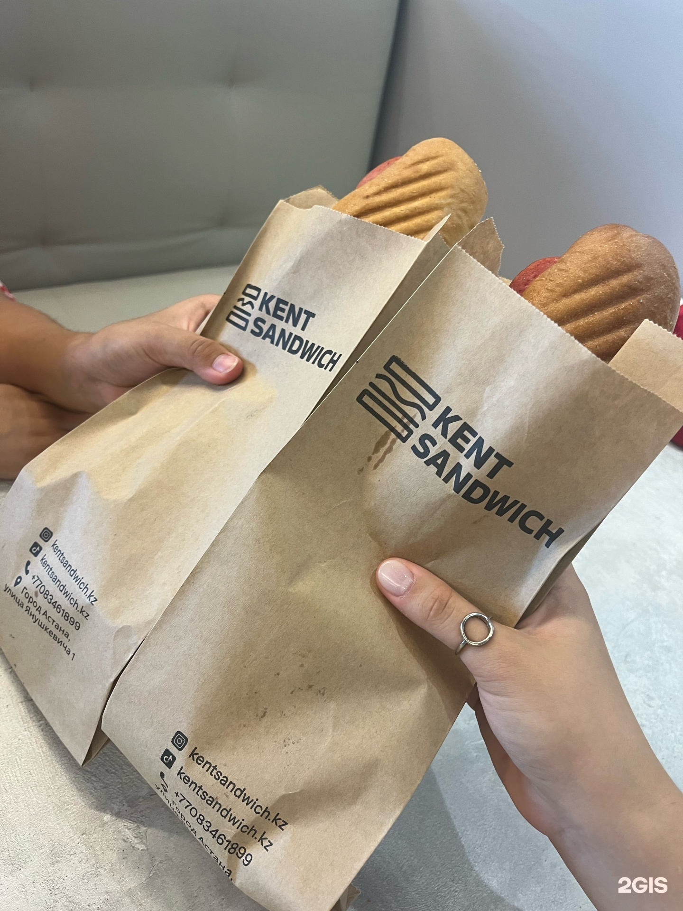

The format
Simple enough to remember

Kent Sandwich serves toasted sandwiches in kraft paper sleeves. The packaging is simple, easy to carry and matches the shop’s black and yellow style.What defines the experience
- Focused menu Eight sandwich choices.
- Fast format Eat inside or take the order with you.
- Warm interior Mustard seating, wood surfaces and soft vertical lighting.